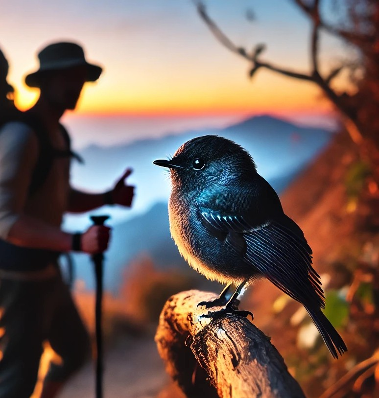

Η ιστορία που θα σας πω είναι απλή. Μια μέρα, ενώ περπατούσα, συνάντησα ένα μικρό πουλί. Αυτή είναι μια σύντομη περίληψη της ιστορίας μου. Εδώ μπορείτε να σταματήσετε να διαβάζετε και δεν θα έχετε χάσει τίποτα από το τι συνέβη εκείνο το δειλινό στην κορυφή ενός βουνού.
Δεν θα γνωρίσετε όμως τι είχε συμβεί μέσα μου. Τι μπορεί να αισθάνθηκα που να χρειαστεί κάποιος να διαβάσει παρακάτω; Άρα, την ιστορία αυτή την απευθύνω σε αυτούς που θέλουν να μάθουν τι ξεχωριστό αισθάνθηκα από αυτό μου το συναπάντημα. Και ίσως για αυτούς που πιστεύουν ότι τα πουλιά δεν πετάνε μόνο πέρα, μόνο για να βρουν τροφή. Γιατί, όταν πέταξε μακριά το πουλί που συναπάντησα, σίγουρα απολάμβανε τη μαγεία του δειλινού εκείνου. Ας πάρουμε όμως τα πράγματα από την αρχή.
Στο βουνό πάω όχι τόσο για να ξεφύγω, αλλά για να βρεθώ με μένα. Ένας τόπος συναντήσεως περισσότερο ψυχικός παρά φυσικός. Έτσι ακριβώς και το τοπίο. Με δέος απλώνεται η κορυφή τόσο μακριά σου, όπως κοιτούσες τη ζωή σαν ήσουν παιδί. Βήμα, βήμα και ανάσα, ανάσα, όλο και πιο βαριά όταν η πλαγιά γίνεται απότομη. Μοιράζω όμως τον στόχο σε πιο μικρούς: μέχρι τον επόμενο λόφο για την ώρα. Ξέχνα την κορυφή, γιατί ζαλίζεσαι σαν γέρνεις τόσο πίσω το κεφάλι. Κάποτε θα απολαύσω ένα ξαφνικό πέταγμα ενός πουλιού που το τρόμαξε η παρουσία μου. Γιατί το βουνό ανήκει στα πουλιά και σε κάθε λογής ζώο που ζει από αυτό. Εγώ είμαι ένας περαστικός, ένας τουρίστας στο τοπίο. Πώς με συνεπαίρνουν οι σκέψεις... Λόφο με λόφο, μόλις φτάνω στα τρία συνεχόμενα μικρά δέντρα, ξέρω ότι είμαι στην κορυφή. Εννοώ σε αυτή την κορυφή, γιατί μετά έχει άλλες, και πιο μετά υπάρχει το πορτοκαλί σκούρο του δειλινού και μετά η άβυσσος του ουρανού.
Εκεί ακριβώς, στο πρώτο δέντρο, στο ύψος των ματιών μου, συναπάντησα το πιο όμορφο μικρό πουλάκι. Μια σταλιά μικρό πλασματάκι, γέννημα του πανέμορφου αυτού βουνού και των χρωμάτων του δειλινού. Καθόταν σε ένα κλαδί, μόλις ένα μέτρο μακριά μου. Δεν πέταξε μακριά, δεν το τρόμαξα. Με κοίταξε, το κοίταξα. Είδα τα υπέροχα γκριζόμαυρα φτερά του, το μπλε κάτω από τον λαιμό του. Γύρισε λίγο το κεφάλι στο πλάι και είδα τα μαύρα ματάκια του να με κοιτούν. Σαν το προσπέρασα, πέταξε, πήγε στο δεύτερο δέντρο, κάθισε και με κοίταξε ξανά. Και εγώ το κοίταζα. Ένιωσα κάτι που δεν έχουμε λέξη να το εκφράσω. Ούτε παρόμοιο αίσθημα για να σας το περιγράψω. Μετά, το πουλάκι πέταξε ψηλά, έκανε σχεδόν δύο γύρους από πάνω μου και έφυγε πίσω από το βουνό.
Το όλο αυτό συναπάντημα ίσως πήρε ένα λεπτό. Ένα λεπτό διάρκειας αυτή η συνάντηση δύο διαφορετικών πλασμάτων πάνω σε ένα βουνό, από τις χιλιάδες βουνά ενός πλανήτη, από τα δισεκατομμύρια πλανητών του σύμπαντός μας. Σταματώ εδώ, γιατί μέχρι εδώ γνωρίζουμε.
Μια στιγμή στο άπειρο του χρόνου. Το πουλάκι δεν περίμενε κάτι από μένα, ούτε εγώ από αυτό. Ήταν να βρεθούμε, και βρεθήκαμε. Ένα λεπτό πιο αργά να πήγαινα ή αυτό να πετούσε νωρίτερα, δεν θα είχαμε αυτή τη συνάντηση. Ίσως έτσι να είναι η ζωή μας. Τυχαία συναπαντήματα που μας ορίζουν και στους οποίους δίνουμε σκοπό.
Όλη η ιστορία μου, όπως σας είπα, μπορεί να ειπωθεί απλά:
«Συνάντησα ένα πουλάκι».
Μπορώ όμως να προσθέσω ότι κάθε φορά που ανεβαίνω το βουνό και φτάνω στα τρία διαδοχικά δέντρα, με συνεπαίρνει ένα αίσθημα:
Ότι ίσως το συναντήσω ξανά.
Έτσι απλά, για να ξέρω πως ακόμη υπάρχει.

Σχόλια